Material Editor (Nexus)
See also
Here you can find the section dedicated to video tutorials, it may be useful to you: Material Editor
The material editor is a very important panel, and it takes many different forms depending on the type of material applied Nexus / Simple PBR (Explained here: TODO: Link to the options of the preferences)
Example Material Editor Nexus with 4 Modules for painting:
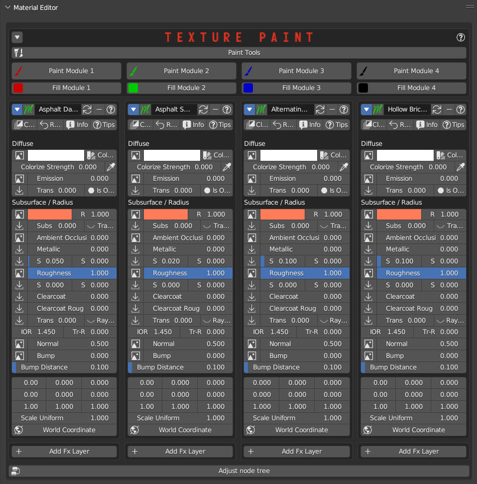{kind=link}
From this panel you can also access painting and many other features!
Material Nexus type
If you are in Nexus mode, or have applied materials that support nexus modules, (Type Car Paint or Water) The panel looks like this:
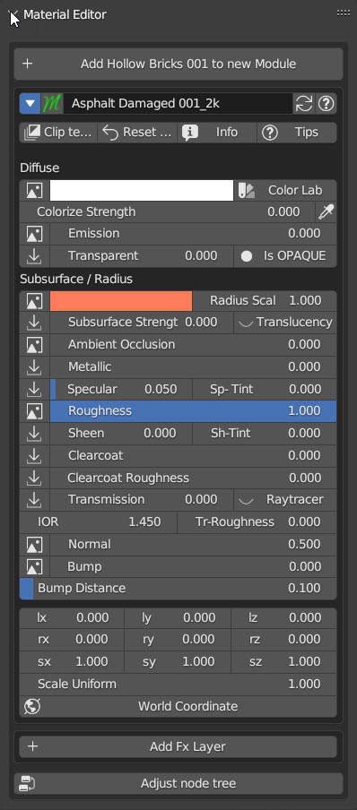{kind=link}
Add Module
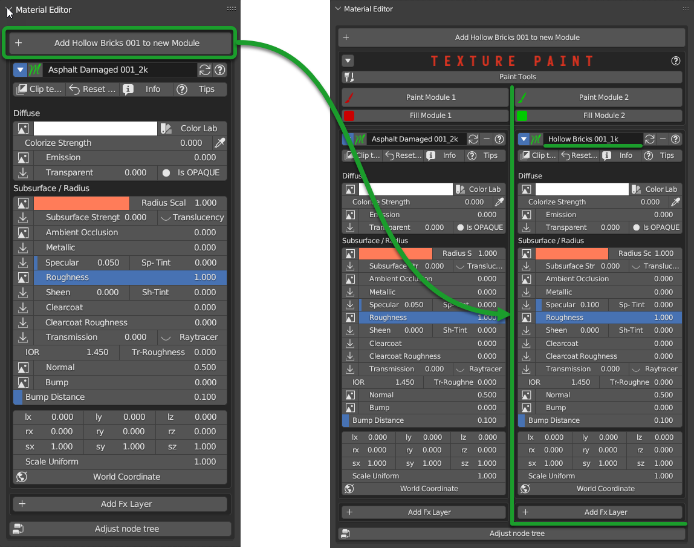{kind=link}
With this button you can add up to a maximum of 4 modules, which will allow you to paint Texture Paint them on the object you are working on.
Note
In order to add a module, rely on the Material Browser in fact you will add exactly what you have in the preview, or you can add via TODO: Link to shader maker for the materials you want to import.
Add Module will not work with Non Nexus type materials!
Show / Hide Group
This button allows you to hide or show all the properties of a group (Nexus Module), it is useful if you are using the FX Module, it makes the workspace cleaner and allows you to focus only on what you are doing.
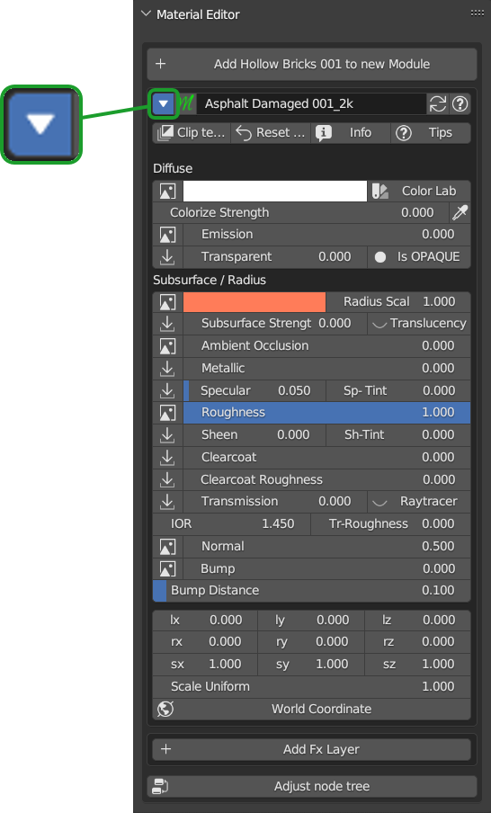{kind=link}
Search Module
Note
Useful only if there are 2 or more modules present in the material.
This button opens a search menu, which allows you to replace / move the modules present in the material. As soon as you select a module, the module from where you are starting will be replaced with the one you have chosen and vice versa.
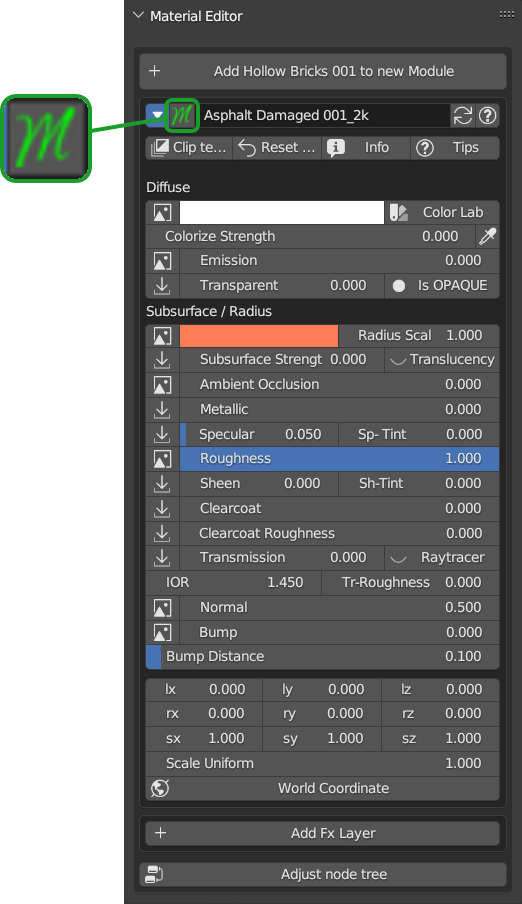{kind=link}
Module Name (Group Name)
From here you can view and also change the name of the group (Nexus Module) you are using.
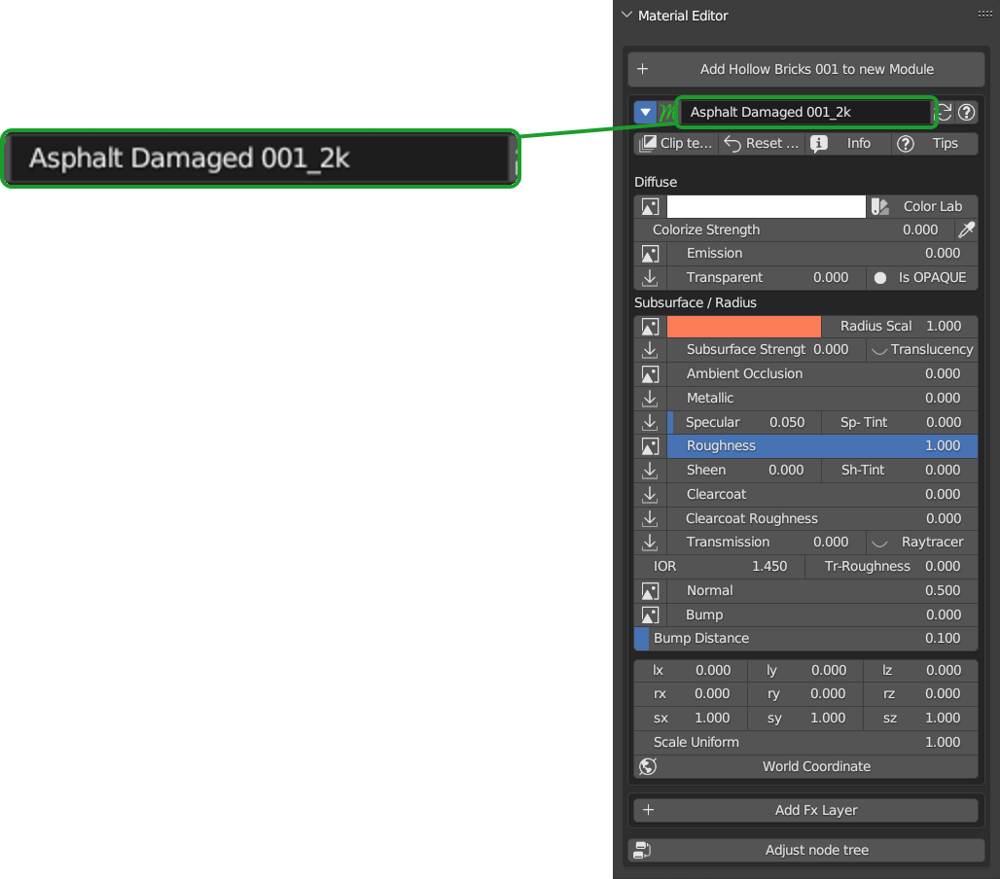{kind=link}
Replace Module
The Replace Module button allows you to replace the module you are using by loading another module, in accordance with the preview of the Material Browser you have chosen.
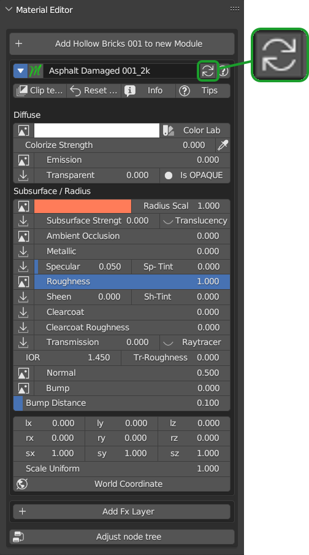{kind=link}
Reset Values
The Reset Values Button allows you to reset the properties of the module you are using to the default values.
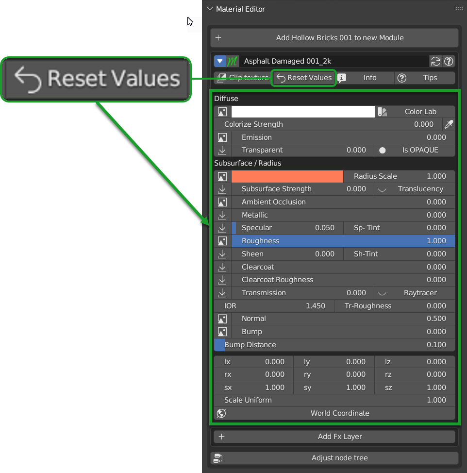{kind=link}
Info
The Info button allows you to view the information of the module you are using, for example the name of the author etc.
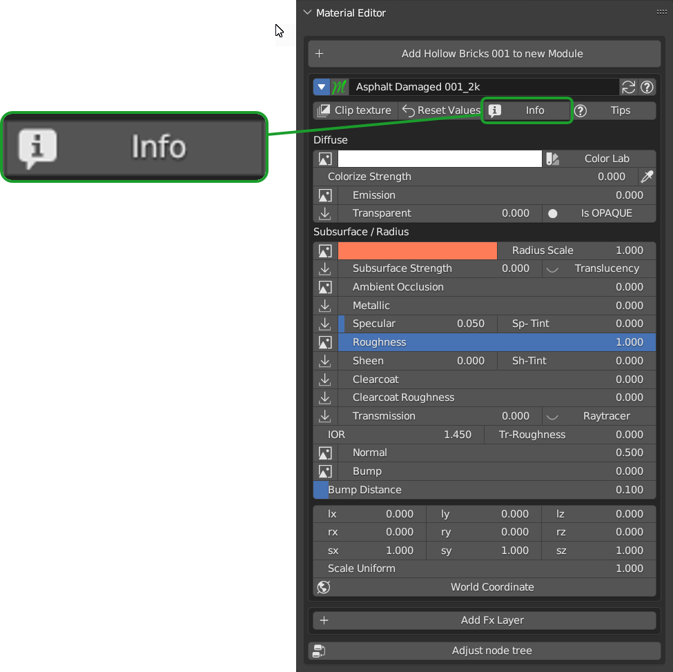{kind=link}
Note
Not all modules necessarily have the info button, it depends on who created them, sometimes it is not present, but usually this information is in the Info & Tag menu
Tips
This button allows you to view or hide the hint next to each slider of the module you are using. so by pressing the hint buttons, you will see a window appear with a description of the parameter you are using.
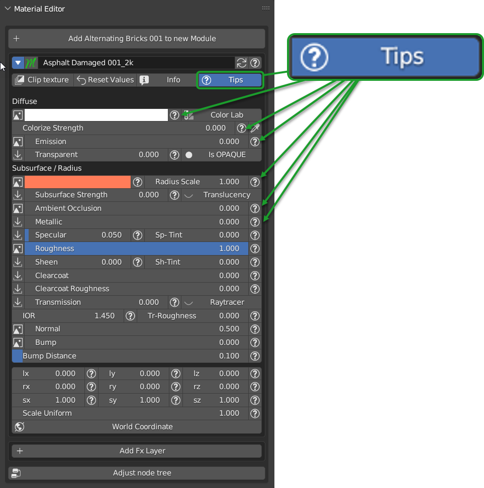{kind=link}
{kind=link}
Diffuse Color
This color box allows you to choose a color to apply to the diffuse texture, in case there is no texture, this takes the place of the texture as a solid color.
Note
This color works in accordance with the Colorize Strength
{kind=link}
{kind=link}
Colorize Strength
This slider allows you to adjust the strength of the color you have chosen in the Diffuse Color box.
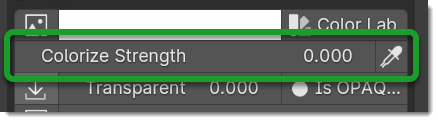{kind=link}
This slider was created so that a value up to 0.5 will colorize the material, so the color will not replace the texture, but it will overlap it, while a value greater than 0.5 will replace the texture with the chosen color up to the value 1.0 which is the maximum colorization value, so it will be as if you had no texture, but only the chosen color, this always keeping the other maps like the specular, the normal etc.
Colorize Sample
By activating this button, 2 new sliders will appear, the first allows you to choose the color to be sampled, the second is the Tolerance which allows you to choose how much the sampled color must be similar to the original color to be replaced.
So in accordance with these settings, now the colorization will only color the parts that have the color similar to that.
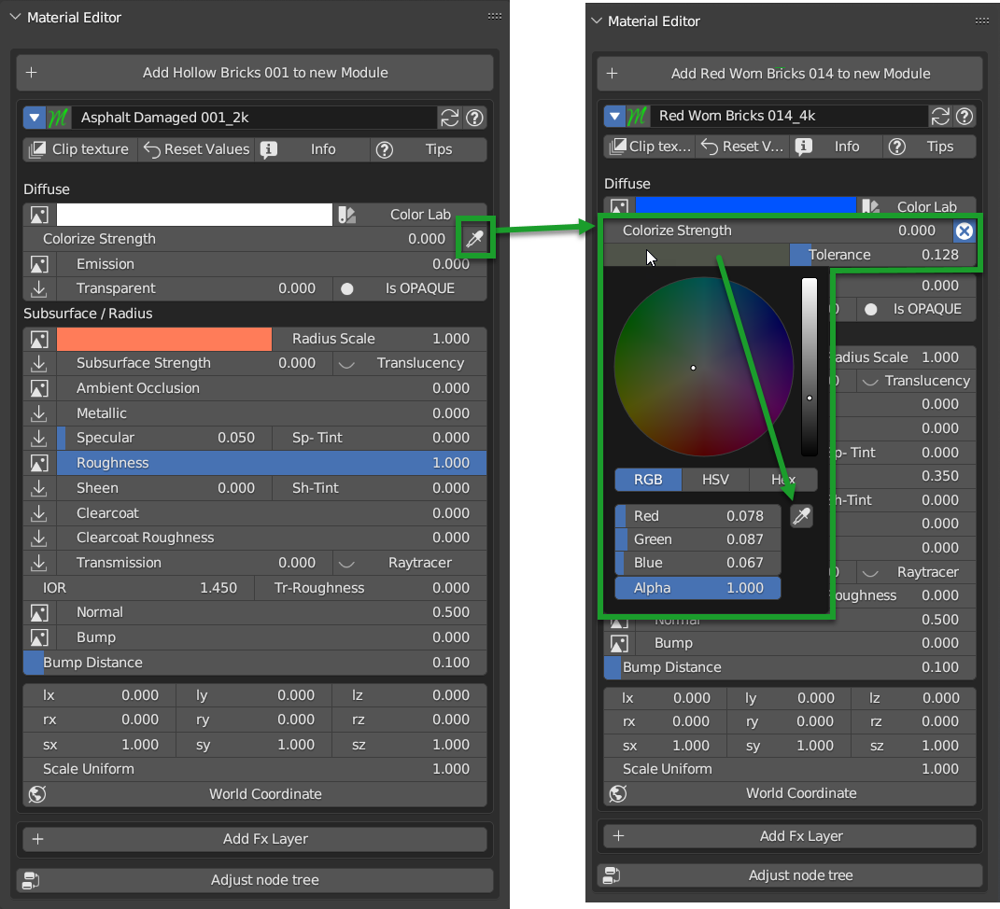{kind=link}
Emission
Note
In Cycles Render the Emission also acts as lighting, in Eevee no, in Eevee it is only a visual effect.

This slider is used to set the Emissivity of the material, there are some materials that have a dedicated emissivity map type Facade where the emissivity maps are on the windows, so if you adjust these sliders with that type of material, you will have your emission on the areas where there is the emissivity map, while if there is no emissivity map, then this slider will work as general emissivity of the material, the whole material will be emitting.
Transparent
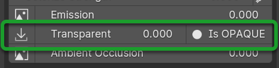{kind=link}
Transparent slider is used to set the transparency of the material, if a transparency map is present, then this slider will only adjust certain areas of the material, while if it is not present, then it will adjust the general transparency of the material, the whole material in this case will be transparent according to the set value.
Note, in Eevee render and only in Eevee render transparency is handled differently, so you will have to use the button next to the slider (Transparent Mode button) to choose how to handle transparency, you can choose between these settings:
This material use a transparency map:
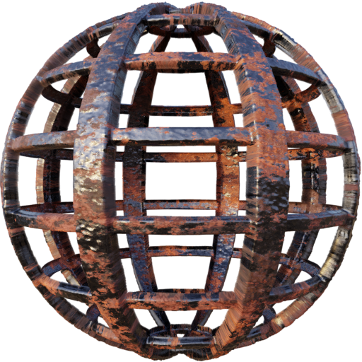{kind=link}
Transparent Mode
This button actually manages the Blend Mode and Shadow Mode of the material
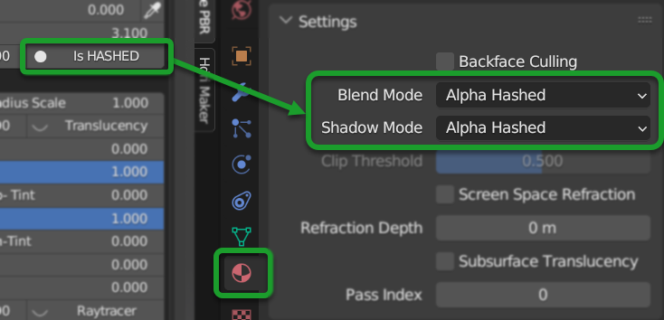{kind=link}
Settings only for Eevee Render:
Is Opaque: Blend Mode: Opaque, Shadow Mode: Opaque
Is Blend: Blend Mode: Alpha Blend, Shadow Mode: Alpha Ashed
Is Hashed Blend Mode: Alpha Hashed, Shadow Mode: Alpha Hashed (The best, but requires more rendering samples to get a good result)
Is Clip Blend Mode: Alpha Clip, Shadow Mode: Alpha Clip
Subsurface/Radius
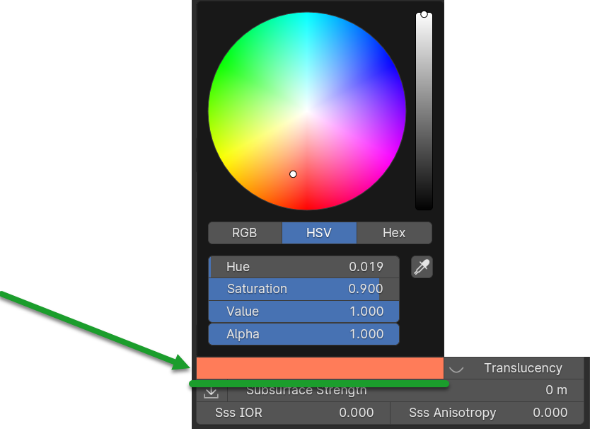{kind=link}
These values allow you to adjust the Subsurface Scattering of the material. Subsurface Scattering is the ability of a material to let light pass through it, but not transparently, but in a diffuse way, as if the light were diffused inside the material, this is very useful for materials like skin, leaves, ears, rubber, plastic, etc.
Example of Subsurface Scattering:
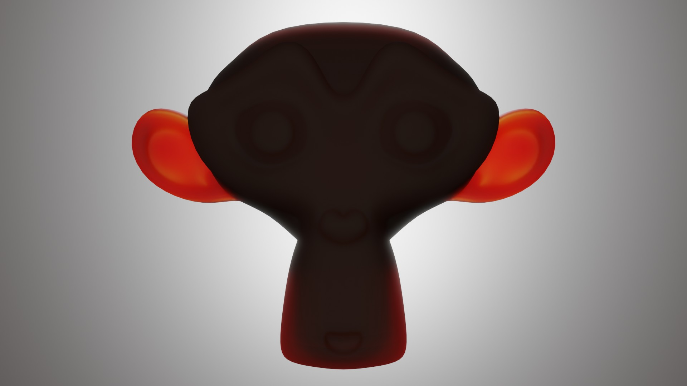{kind=link}
Ambient Occlusion
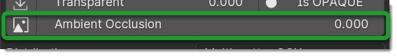{kind=link}
This slider allows you to adjust the Ambient Occlusion of the material, if an Ambient Occlusion map is present.
This allows you to further simulate the ambient occlusion through its map. This is useful in Eevee, where the calculation of the ambient occlusion is quite approximate, this slider will give a touch of realism in addition to the material.
If you are in Cycles Render, in some cases it can be useful.
Metallic
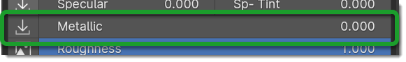{kind=link}
This slider allows you to adjust the Metallic of the material, if a Metallic map is present, if it is not present then this slider will adjust the general metallic of the material, the whole material in this case will be metallic depending on the set value, a metallic value of 1.0 and a Roughness of 0.0, will render the material as a shiny metal, while a metallic value of 0.0 and a Roughness of 1.0 will render the material as a non-metallic material
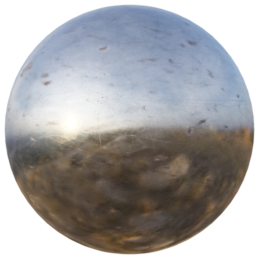{kind=link}
Hint
On a completely black material, setting the Metallic will have no effect, as the black color does not reflect light, so no effect will be seen, to see the effect of the Metallic, it is necessary set a color other than black, even if it is a very dark color, in this way you will see the effect of the Metallic. In short, everything except total black 😊
Specular/Tint
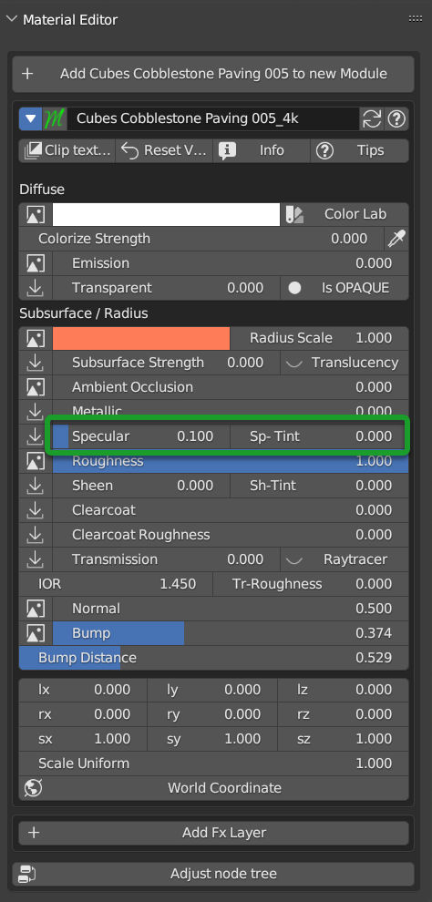{kind=link}
This 2 properties work in symbiosis:
Specular
This slider adjusts the specular of the material, if a specular map is present, then this slider will only adjust some areas of the material, while if it is not present, then it will adjust the general specular of the material.
Specular Tint
Mix between white and the base color in order to tint the specular highlights.
Example between Specular tint at 0.0 and 1.0, on the left 0.0, on the right 1.0
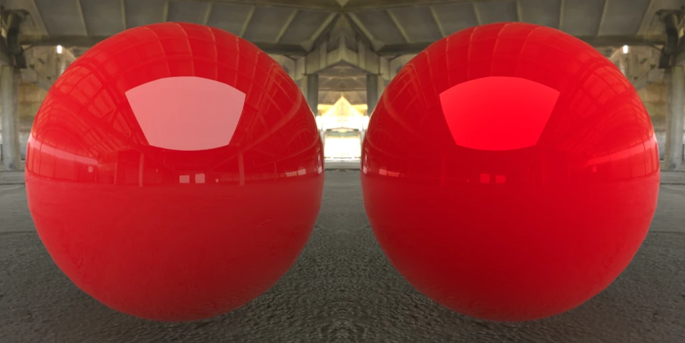{kind=link}
Roughness
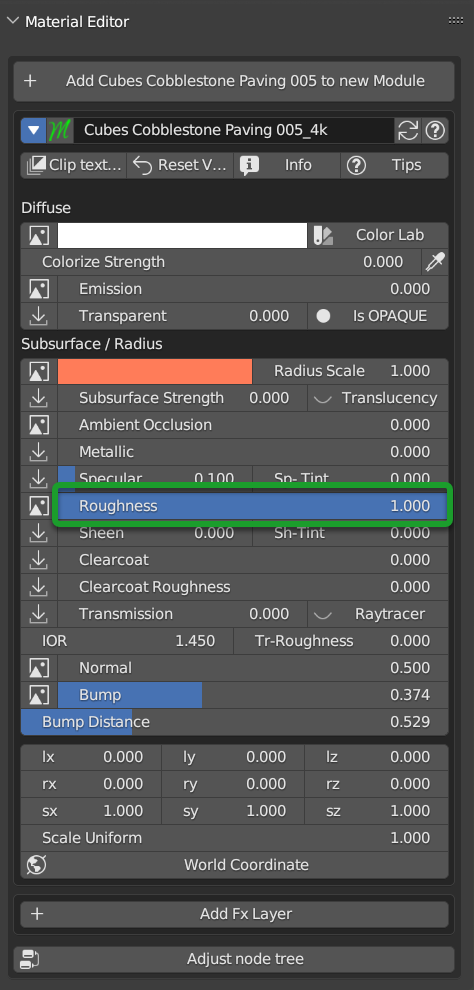{kind=link}
This slider allows you to adjust the Roughness of the material, if a Roughness map is present, then this slider will only adjust some areas of the material, while if it is not present, then it will adjust the general roughness of the material.
Example, on the left the roughness is at 0.0 on the right at 1.0:
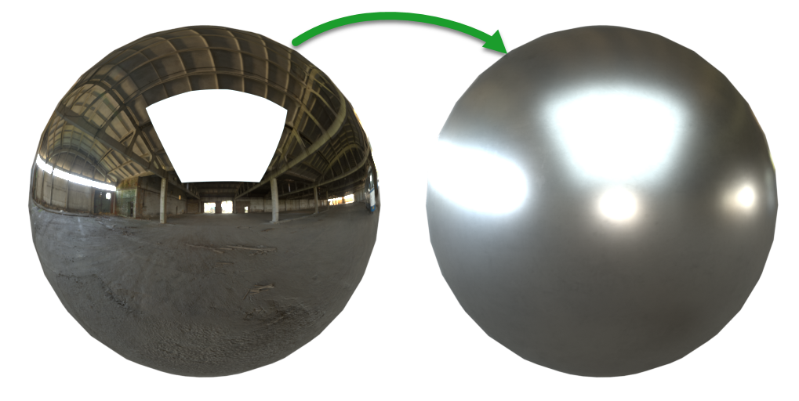{kind=link}
Sheen / Sheen Tint
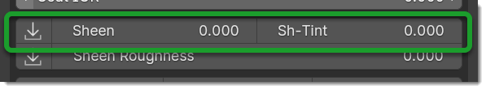{kind=link}
These 2 properties work in symbiosis:
Sheen
The sheen is a soft velvet-like reflection that appears in the areas where the light is reflected, value 0.0 means no sheen, while value 1.0 means maximum sheen.
Sheen Tint
Mix between white and the base color in order to tint the sheen. Value 0.0 means no tint, while value 1.0 means maximum tint.
Sheen Example: First image, Sheen 0.0 Sheen Tint 0.0, Second image Sheen 1.0 Sheen Tint 0.0, Third image Sheen 1.0 Sheen Tint 1.0
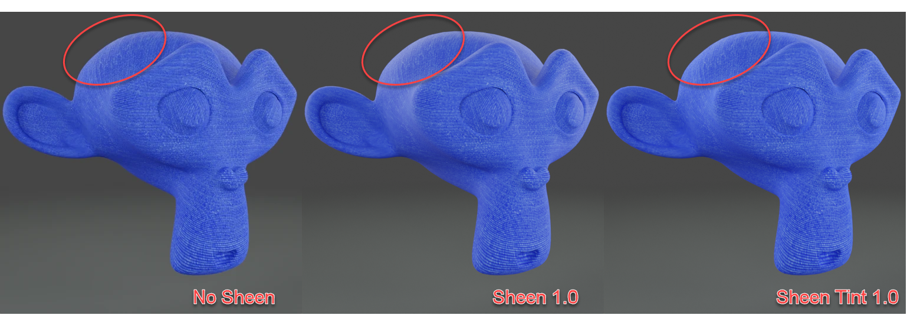{kind=link}
Clearcoat / Roughness
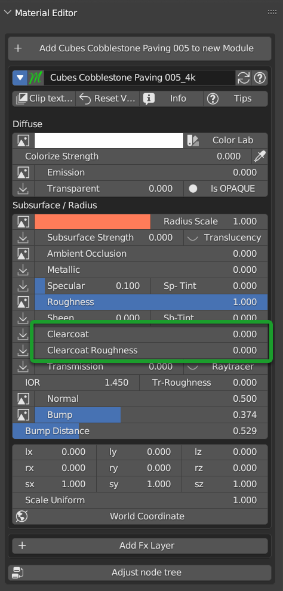{kind=link}
Clearcoat
The clearcoat is a layer of varnish that is applied to the material, it is a layer that is applied on top of the material, this is similar to the clearcoat of a car.
Clearcoat Roughness
In accordance with the clearcoat, this slider allows you to adjust the roughness of the clearcoat.
Example, First Image Clearcoat 0.0, Second Image Clearcoat 1.0 and Roughness 0.0, Third Image Clearcoat 1.0 and Roughness 0.25
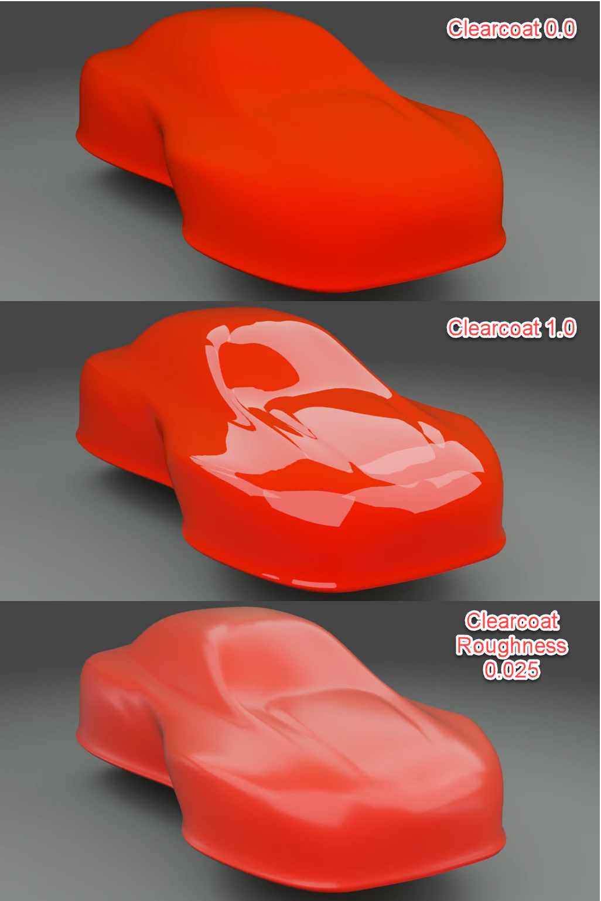{kind=link}
Transmission
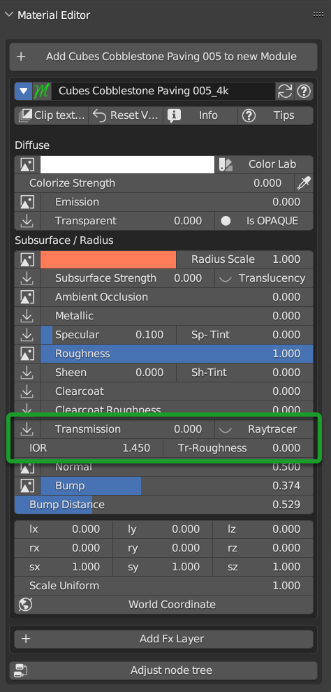{kind=link}
The transmission is the ability of a material to let light pass through it, this is very useful for materials like glass, water etc.
This property works in symbiosis with the IOR and Transmission Roughness properties
The value of the transmission is a value between 0.0 and 1.0, where 0.0 means no transmission, while 1.0 means maximum transmission (To simulate a normal glass it will have 1.0 of transmission)
IOR
The IOR is the index of refraction, it is a value that is used to calculate the refraction of the material. For example the IOR of the glass is 1.45, the IOR of the water is 1.33, the IOR of the diamond is 2.42 etc…
Transmission Roughness
This slider allows you to adjust the roughness of the transmission. The transmission Roughness will make the material more or less transparent, the higher the value, the less transparent the material will be, the lower the value, the more transparent the material will be.